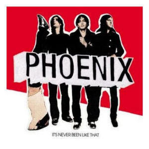

Andrew Schutt

-module(hello_module).
-export([some_fun/0, some_fun/1]).
% A "Hello world" function
some_fun() ->
io:format('~s~n', ['Hello world!']).
% This one works only with lists
some_fun(List) when is_list(List) ->
io:format('~s~n', List).
% Non-exported functions are private
priv() ->
secret_info.
defmodule HelloModule do
# A "Hello world" function
def some_fun do
IO.puts "Hello world!"
end
# This one works only with lists
def some_fun(list) when is_list(list) do
IO.inspect list
end
# A private function
defp priv do
:secret_info
end
end